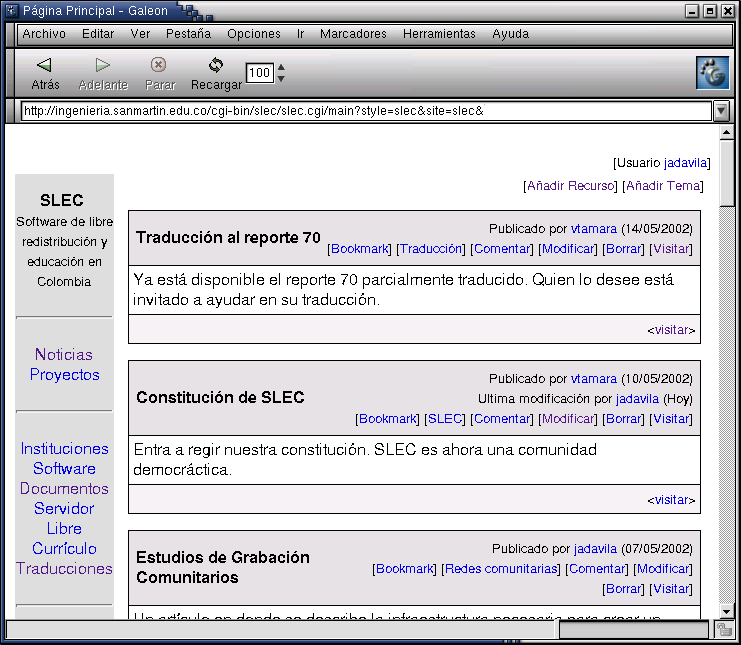

|
 |
Portal de Noticias
En http://ingenieria.sanmartin.edu.co/slec, los miembros de SLEC pueden publicar noticias o anunciar eventos como:
Curso gratuito de administración y redes Linux para colegios.
Seminario de Software Libre y Educación en Colombia.
Curso-Taller de HB.
Noticias de adopción de software libre de libre distribución en Perú, España, Suráfrica, Malasia.
El sistema se basa en HB y FuWeb, software libre colombiano.
